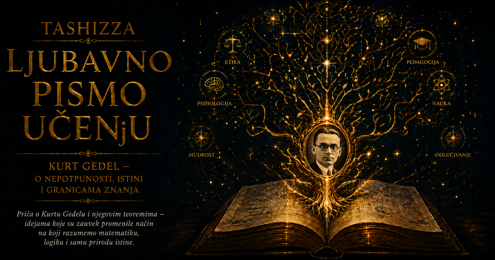

Ljubavno pismo učenju

Kurt Gedel je čitavog života tragao za svetom u kome istina ne zavisi od ljudske nesavršenosti. Verovao je da iza promenljivih utisaka, pogrešnih zaključaka i nestabilnih istorijskih okolnosti postoji čvrst poredak koji um može da otkrije. Matematičke istine za njega nisu bile korisne izmišljotine niti pravila igre koja su ljudi dogovorili. Postojale su objektivno, kao nevidljiv predeo koji se otvara pred dovoljno pažljivim mišljenjem. Upravo je čovek sa tako snažnom verom u razum pokazao da nijedan dovoljno moćan formalni sistem ne može sopstvenim sredstvima obuhvatiti sve aritmetičke istine i konačno potvrditi vlastitu doslednost. Mislilac koji je žudeo za sigurnošću postao je otkrivač njenih granica.
Iza teorema koje su promenile logiku, matematiku i računarstvo živeo je izuzetno osetljiv čovek, vitak, povučen i gotovo zastrašujuće precizan. U matematičkom dokazu pronalazio je skrivene prolaze kroz zidove koje su najveći umovi smatrali neprobojnim. U svakodnevnom životu sumnjao je u svoje zdravlje, lekove, vazduh u sobi, ispravnost uređaja, bezbednost hrane i namere drugih ljudi. Njegov razum umeo je da izađe iz formalnog sistema i sagleda ono što sistem ne može reći o sebi. Iz sistema sopstvenog straha izlazio je mnogo teže.
Rođen je 28. aprila 1906. godine u Brnu, tadašnjem Brünnu u Austrougarskoj, u nemačkoj građanskoj porodici povezanoj sa razvijenom moravskom tekstilnom industrijom. Njegov otac Rudolf napredovao je od trgovačkog pripravnika do upravnika i suvlasnika velike tekstilne fabrike. Majka Marijana bila je obrazovana žena zainteresovana za književnost, muziku i umetnost. Kurt i njegov stariji brat Rudolf odrastali su u materijalno sigurnom domu, uz brižljivo obrazovanje i očekivanje da će svoje sposobnosti pretvoriti u ozbiljne građanske karijere.
Mali Kurt stekao je porodični nadimak Herr Warum, „gospodin Zašto”, jer je neumorno tražio razloge iza svega što bi čuo. Pitanje „zašto” kod njega nije ostalo prolazna dečja navika. Postalo je osnovni pokret njegovog uma. Nije ga zadovoljavalo da zna kako se nešto radi; želeo je da otkrije zbog čega mora biti upravo tako, na kojim pretpostavkama počiva zaključak i da li se iza prihvaćenog objašnjenja skriva neopravdan korak. Većina ljudi traži odgovor koji im omogućava da nastave dalje. Gedel je tražio odgovor koji neće ostaviti pukotinu.
Kao dete oboleo je od reumatske groznice. Oporavio se, a nije utvrđeno trajno oštećenje srca, ali je poverovao da mu je srce zauvek ugroženo. Ta briga pratila ga je decenijama. Pažljivo je posmatrao telesne osećaje, čitao medicinsku literaturu, merio temperaturu i tražio znakove bolesti u promenama koje bi drugi jedva primetili. Sposobnost da u matematici prati udaljene posledice jedne pretpostavke dobila je u njegovom odnosu prema telu bolno naličje. Svaka sitna nelagodnost mogla je postati početak čitavog sistema mogućih katastrofa.
Država u kojoj je rođen nestala je pre nego što je odrastao. Posle Prvog svetskog rata Brno je postalo deo Čehoslovačke, a nemačka porodica Gedel našla se u novoj nacionalnoj stvarnosti. Kurt je dobio čehoslovačko državljanstvo, premda se kulturno osećao Austrijancem. Tokom narednih decenija promeniće još nekoliko državljanstava, ne zato što je birao različite identitete, već zato što su države menjale granice, zakone i ime političkog sveta kojem je pripadao. Za čoveka opsednutog doslednošću, istorija je neprestano pokazivala koliko se brzo sistem može preobraziti i koliko malo pojedinac može da utiče na promenu njegovih pravila.
U školi je bio izuzetan gotovo u svim predmetima. Najpre su ga privlačile fizika i prirodne nauke, pa je 1924. godine otišao na Univerzitet u Beču sa namerom da studira teorijsku fiziku. Beč je tada bio grad posleratnih rana i zadivljujuće intelektualne energije. Stara prestonica izgubila je carstvo, ali je i dalje stvarala novu muziku, književnost, psihoanalizu, ekonomsku teoriju, filozofiju i matematiku. Istovremeno su rasli siromaštvo, političko nasilje, antisemitizam i sukobi ideologija koje će evropski život uskoro odvesti u katastrofu.
Predavanja Filipa Furtvenglera iz teorije brojeva toliko su ga očarala da se okrenuo matematici. Hans Han prepoznao je njegovu darovitost i usmerio ga prema logici, a preko njega je Gedel dospeo u intelektualni krug okupljen oko Morica Šlika, kasnije poznat kao Bečki krug. Njegovi članovi želeli su da filozofiju pročiste logičkom analizom jezika i približe je strogosti nauke. Sumnjali su u metafizičke tvrdnje koje se ne mogu iskustveno proveriti ili logički razjasniti i nadali se jedinstvenom, racionalno uređenom sistemu znanja.
Gedel je prisustvovao sastancima, pažljivo slušao i govorio znatno manje od većine učesnika. Njegova tišina nije značila da prihvata stavove najglasnijih ljudi u prostoriji. Delio je njihovu ozbiljnost prema logici, ali ne i odbacivanje metafizike. Verovao je u objektivno postojanje matematičkih predmeta, u istinu nezavisnu od jezika kojim je izražavamo i u mogućnost racionalne filozofije koja će jednog dana dopreti dalje nego postojeće naučne metode. Među intelektualcima koji su dovodili u pitanje stare autoritete sačuvao je pravo da dovede u pitanje i njihove nove izvesnosti.
Doktorskim radom dokazao je potpunost predikatske logike prvog reda: svaka logički valjana formula u toj oblasti može se formalno dokazati. Nedugo zatim došao je do rezultata koji je otvorio sasvim drugačiji horizont. Na konferenciji u Kenigsbergu 1930. godine gotovo uzgred je najavio da u dovoljno snažnim i doslednim formalnim sistemima postoje tvrdnje koje se ne mogu ni dokazati ni opovrgnuti. Džon fon Nojman brzo je prepoznao značaj saopštenja i njegove posledice po Hilbertov program matematičke sigurnosti.
Rad objavljen 1931. godine imao je skroman tehnički naslov, a promenio je razumevanje formalnog znanja. Gedel je pokazao da istina i dokazivost ne mogu biti potpuno poistovećene unutar jednog dovoljno snažnog sistema. Pokazao je i da takav sistem ne može sopstvenim sredstvima pružiti završnu potvrdu vlastite doslednosti. O matematičkom sadržaju teorema govori glavna priča ove knjige. Za razumevanje Gedela kao čoveka važna je njihova unutrašnja ironija: najdublju granicu formalne sigurnosti otkrio je um koji je za sigurnošću žudeo gotovo bez predaha.
Gedel svoje rezultate nije doživljavao kao poraz razuma. Za njega su pokazivali da objektivna matematička istina prevazilazi svaki pojedinačni simbolički sistem kojim pokušavamo da je obuhvatimo. Bio je filozofski platonista: verovao je da matematičke predmete ne stvaramo proizvoljno, nego ih otkrivamo. Formalna pravila predstavljala su sredstva istraživanja, ali nisu iscrpljivala stvarnost koju istražuju. Granica sistema za njega nije označavala prazninu iza znanja, nego postojanje šire istine.
To uverenje povezivalo ga je sa Lajbnicom, kome se vraćao čitavog života. Čitao je Kanta, Huserla i klasične metafizičare, razmišljao o prirodi vremena, besmrtnosti duše, postojanju Boga i mogućnosti da filozofija postane stroga nauka. Razvio je i formalnu verziju ontološkog argumenta za Božje postojanje, ali je nije objavio kao teološku objavu niti kao zamenu za religioznu veru. Plašio se da će javnost sam pokušaj formalizacije pogrešno razumeti. Čovek čiji je rad postao simbol granica matematike pažljivo je čuvao najdublje filozofske izvore iz kojih je taj rad izrastao.
Oko 1927. godine upoznao je Adelu Porkert, rođenu Nimburski, koja je živela u njegovom susedstvu. Bila je šest godina starija, razvedena, rimokatolkinja i radila je kao plesačica, a zatim kao maserka. Njegova porodica smatrala ju je neprikladnim izborom za darovitog sina iz ugledne protestantske kuće. Gedel je u toj vezi pokazao odlučnost koju ljudi, videći samo njegovu povučenost i krhkost, nisu uvek očekivali. Ostao je uz Adelu uprkos dugom porodičnom protivljenju, a venčali su se 1938. godine.
Adele nije pripadala univerzitetskom svetu i nije mogla pratiti tehnički sadržaj njegovih dokaza, ali je razumela čoveka koji ih je stvarao. Bila je neposredna, praktična, živahna i sposobna da reaguje tamo gde bi se on povukao pred stvarnošću. Brinula je o putovanjima, lekarima, hrani i odnosima sa ljudima. Njena uloga nije se svodila na pomoć u domaćinstvu. Postala je posrednik između apstraktnog uma i sveta u kome je trebalo kupiti namirnice, prepoznati neposrednu opasnost, odgovoriti na uvredu i doneti odluku pre nego što se mogu razmotriti sve moguće posledice.
Tridesete godine donele su Gedelu svetsko priznanje i ozbiljne psihičke krize. Posle habilitacije radio je kao privatni docent na Univerzitetu u Beču, bez sigurnog plaćenog položaja. Putovao je u Sjedinjene Države, predavao na Prinstonu i upoznavao vodeće matematičare. Istovremeno je patio od nesanice, iscrpljenosti, probavnih tegoba, depresivnih stanja i sve snažnijeg straha za zdravlje. Boravio je u sanatorijumima i oslanjao se na Adelu i porodicu. Njegove teškoće nisu bile romantična cena genijalnosti. Bile su stvarna bolest koja mu je nanosila patnju, prekidala rad i postepeno sužavala slobodu.
Godine 1936. Morica Šlika ubio je na stepeništu Univerziteta u Beču bivši student Johan Nelbek. Zločin je potresao gradsku intelektualnu zajednicu, dok je deo desničarske štampe pokušavao da ga opravda napadima na Šlikovu filozofiju. Za Gedela je nasilna smrt čoveka čiji je seminar bio važan za njegov razvoj predstavljala još jednu potvrdu da se svet ideja ne nalazi izvan istorije. Razgovor, dokaz i argument nisu mogli sami da spreče mržnju, propagandu i političko nasilje.
Posle pripajanja Austrije nacističkoj Nemačkoj 1938. godine njegov položaj postao je nesiguran. Nije bio Jevrejin, ali je pripadao intelektualnom krugu čiji su mnogi članovi progonjeni ili proterani. Izgubio je dotadašnje pravo da predaje i suočio se sa mogućnošću vojne obaveze. Jednom ga je na ulici napala grupa nacistički nastrojenih mladića. Adele je stala između njega i napadača i, prema sačuvanim svedočenjima, oterala ih udarcima kišobrana. U tom prizoru ima nečeg simboličnog: čoveka koji je otkrio granice najmoćnijih formalnih sistema od stvarnog nasilja zaštitila je odlučnost žene koju njegova porodica nekada nije smatrala dovoljno dobrom za njega.
Kurt i Adele odlučili su da napuste Evropu. Početkom 1940. godine, kada je atlantski put već bio opasan, krenuli su prema istoku. Putovali su preko Sovjetskog Saveza Transsibirskom železnicom, nastavili preko Japana i Tihog okeana i stigli u Sjedinjene Države. Bio je to gotovo put oko sveta, prelazak iz Evrope zahvaćene ratom u Prinston, koji će postati njihov trajni dom. Gedel je nosio rukopise i beleške uma koji je već promenio matematiku. Adele je nosila praktičnu snagu potrebnu da taj um bezbedno stigne na drugu stranu sveta.
Institut za napredne studije u Prinstonu pružio mu je vreme, mir i slobodu od redovnih nastavnih obaveza. Okupljao je izbegle i američke naučnike izuzetnog ugleda, ali Gedelov položaj u početku nije odmah postao potpuno siguran. Objavljivao je retko, godinama doterivao ideje i odlagao rukopise dok ne bi zadovoljili gotovo nedostižan zahtev preciznosti. Kolege su znale da se iza njegovog ćutanja mogu nalaziti rezultati koji menjaju čitavu oblast, dok je ustanova ipak morala da procenjuje rad čoveka čiji se doprinos nije mogao meriti uobičajenim brojem publikacija.
U Prinstonu je razvio jedno od najpoznatijih intelektualnih prijateljstava dvadesetog veka. Albert Ajnštajn i Kurt Gedel razlikovali su se po temperamentu, generaciji i javnom nastupu. Ajnštajn je posedovao humor, toplinu i svetsku slavu; Gedel je govorio tiho, živeo povučeno i teško podnosio izlaganje. Povezivala ih je vera da matematika i fizika otkrivaju stvarnost koja postoji nezavisno od ljudskih dogovora, kao i spremnost da ostanu usamljeni kada se ne slažu sa vladajućim pravcima mišljenja.
Redovno su pešačili između Instituta i svojih kuća, razgovarajući o fizici, filozofiji, politici i vremenu. Ajnštajn je govorio da je u poznijim godinama u Institut često odlazio zbog privilegije da se kući vraća sa Gedelom. U tom prijateljstvu Gedel je pronašao sigurnost koju mu formalna priznanja nisu mogla pružiti. Ajnštajn je cenio njegovu neobičnu dubinu, štitio ga u institucionalnim prilikama i sa blagim humorom prihvatao njegove strahove. Njihove šetnje pripadale su retkim delovima Gedelovog života u kojima se veliki um nije nalazio sam pred svetom.
Povodom Ajnštajnovog sedamdesetog rođendana 1949. godine Gedel je predstavio kosmološka rešenja jednačina opšte relativnosti koja opisuju rotirajuće svemire i dopuštaju zatvorene vremenske putanje. U takvom modelu putnik bi, barem matematički, mogao da se vrati u sopstvenu prošlost. Gedela je zanimalo šta takva mogućnost govori o samoj prirodi vremena. Ako jednačine relativnosti dopuštaju svetove bez univerzalnog, objektivnog proticanja vremena, onda osećaj da sadašnjost neumitno nestaje možda ne pripada osnovnoj strukturi stvarnosti.
Njegov model nije predstavljao opis našeg svemira, ali je otkrio nešto važno o teoriji: iz njenih jednačina ne sledi automatski poredak vremena koji ljudsko iskustvo smatra očiglednim. Gedelovo interesovanje nije bilo samo tehničko. Verovao je da objektivno proticanje vremena možda predstavlja privid ljudske svesti i da stvarnost u dubljem smislu nije podeljena na prošlost koja više ne postoji, kratku sadašnjost i budućnost koja još nije nastala. Za čoveka opterećenog bolešću i smrću, zamisao da ono što je postojalo nije zauvek izgubljeno imala je i snažnu ličnu privlačnost.
Jedna od najpoznatijih priča o Gedelu dogodila se prilikom dobijanja američkog državljanstva. Pripremajući se za saslušanje 1947. godine, temeljno je proučio Ustav Sjedinjenih Država i zaključio da u njemu postoji mogućnost da se republika zakonitim putem pretvori u diktaturu. Oskar Morgenštern pokušavao je da ga ubedi da svoje otkriće ne iznosi pred sudijom. Na saslušanje u Trentonu došli su sa njim Morgenštern i Ajnštajn kao svedoci.
Sudija Filip Forman, koji je ranije učestvovao i u Ajnštajnovoj naturalizaciji, pomenuo je da je Gedel došao iz zemlje koja je doživela diktaturu i izrazio uverenje da se takav preokret u Americi ne može dogoditi. Gedel je odmah počeo da objašnjava da može dokazati suprotno. Njegovi prijatelji nastojali su da ga zaustave, a sudija je razgovor priveo kraju ne ugrožavajući njegovo dobijanje državljanstva. Gedel nikada nije javno razradio tačan ustavni mehanizam koji je imao na umu, pa su kasnija objašnjenja ostala pretpostavke.
Aneggdota je snažna zbog mentalne navike koju otkriva. Većina ljudi bi ceremoniju državljanstva videla kao svečani čin pripadanja i priliku da pokaže zahvalnost zemlji koja mu je pružila utočište. Gedel je i u tom trenutku proveravao doslednost sistema i tražio tačku kroz koju bi se njegova suprotnost mogla uvući. Institucija za njega nije postajala bezbedna zato što uživa veliki ugled, a pravilo nije postajalo neprobojno zato što je napisano sa dobrim namerama. Iskustvo Evrope naučilo ga je da ustav, zakon i administracija ne mogu sami garantovati da će ljudi zauvek sačuvati vrednosti zbog kojih su ih uspostavili.
Gedel je u Americi nastavio da se bavi temeljima matematike, teorijom skupova, filozofijom i fizikom. Njegov dokaz da su aksiom izbora i generalizovana hipoteza kontinuuma saglasni sa standardnim aksiomima teorije skupova, pod pretpostavkom njihove doslednosti, otvorio je put kasnijem dokazu njihove nezavisnosti. Ipak, nije verovao da nezavisnost znači da o takvim pitanjima ne postoji objektivna istina. Smatrao je da postojeći aksiomi možda nisu dovoljno snažni i da matematičari treba da tragaju za novim principima koji će bolje osvetliti strukturu beskonačnog. Ćutanje jednog formalnog sistema za njega nije bilo ćutanje stvarnosti.
Njegov način rada bio je spor, osamljen i obeležen krajnjim zahtevom prema sebi. Vodio je brojne sveske, zapisivao matematičke rezultate, filozofske opaske, pitanja o svakodnevnom životu i ideje koje dugo nije pokazivao drugima. Koristio je Gabelsbergerovu stenografiju, zbog čega je veliki deo beležaka decenijama ostao teško pristupačan. U njima se pojavljuje mislilac mnogo šireg interesovanja nego što bi slika čistog logičara nagovestila: razmatrao je fenomenologiju, biologiju, fiziku, religiju, psihologiju, budućnost čovečanstva i mogućnost sistematske metafizike.
U njegovom odnosu prema Lajbnicu dodirivale su se filozofska pronicljivost i rastuća sumnjičavost. Smatrao je da je deo Lajbnicove zaostavštine izgubljen ili zanemaren, a povremeno je sumnjao da postoje organizovane sile koje sprečavaju razvoj racionalne metafizike. Istorija ideja zaista zavisi od institucija, moći, dostupnosti rukopisa i vladajućih intelektualnih moda. Gedelova sumnja ipak je ponekad prelazila u progoniteljska tumačenja. Njegov briljantni razum nije ga štitio od pogrešnih uverenja; mogao je čak da im izgradi složenu i prividno uređenu unutrašnju arhitekturu.
Strahovi povezani sa zdravljem i ishranom zauzimali su sve veći deo njegovog života. Patio je od stvarnih probavnih tegoba i veoma strogo birao hranu. Plašio se štetnih sastojaka, loše pripreme, otrovnih gasova iz uređaja i mogućnosti da ga neko namerno otruje. Adele je postala osoba kojoj je najviše verovao. Pripremala je obroke koje je smatrao bezbednim, probala hranu pre njega i nagovarala ga da jede dovoljno. Njena svakodnevna briga omogućavala mu je da nastavi život i rad čak i kada su njegovi strahovi postajali veoma snažni.
Njihov brak nije bio jednostavna priča o požrtvovanoj ženi i bespomoćnom geniju. Adele je imala snažan karakter, vlastite bolesti, potrebe i granice. Umela je da bude gruba, duhovita, zaštitnički nastrojena i odlučna. Kurt joj je ostao duboko privržen. Dopisivali su se kada bi bili razdvojeni, a iza njegovog formalnog držanja postojala je nežnost koju je pokazivao malom broju ljudi. Nisu imali dece. Gradili su zajednicu u kojoj je ona održavala vezu sa spoljnim svetom, dok je on u njenoj odanosti nalazio sigurnost kakvu gotovo nigde drugde nije mogao da oseti.
Ajnštajnova smrt 1955. godine oduzela mu je najvažnijeg intelektualnog saputnika u Prinstonu. Gedel je i dalje imao prijatelje i sagovornike, među njima Morgenšterna i logičara Hao Vanga, ali se sve više povlačio. Telefonski razgovor često mu je bio lakši od susreta. Posetioce je izbegavao ili primao pod strogo kontrolisanim uslovima. Mnoge radove nije završio do oblika koji bi smatrao dostojnim objavljivanja. Čovek koji je dokazao da nijedan dovoljno snažan formalni sistem nije potpun teško je podnosio svaku nepotpunost sopstvenog izraza.
Dobio je prvu Ajnštajnovu nagradu, počasni doktorat Harvarda, članstva u uglednim naučnim društvima i Nacionalnu medalju za nauku. Harvard je njegov doprinos opisao kao najznačajniji napredak u logici od Aristotela. Gedel je prema javnim počastima osećao nelagodnost. Ceremonije su podrazumevale putovanje, izlaganje, nepredvidive susrete i gubitak kontrole nad okruženjem. Kada mu je dodeljena Nacionalna medalja za nauku, nije otišao u Vašington da je primi. Spoljašnje priznanje nije moglo da ukloni unutrašnju opasnost koju je osećao.
U razgovorima sa Hao Vangom govorio je o razumu, Bogu, smrti i mogućnosti budućeg života. Verovao je da je svet racionalno uređen i da ljudski život mora imati smisao koji se ne iscrpljuje kratkim zemaljskim trajanjem. Smatrao je da duša može nastaviti svoj razvoj posle smrti, jer bi bez toga mnoge sposobnosti i težnje ostale neostvarene. Ta uverenja nisu bila odvojeni dodatak njegovom matematičkom radu. Pripadala su istoj potrebi da se iza prividne nedovršenosti pronađe dublji poredak.
Najbolnija protivrečnost njegovog života postajala je sve vidljivija. U filozofiji je verovao da svet ima racionalnu osnovu. U svakodnevici je sve češće osećao da okruženjem upravljaju skrivene i zlonamerne sile. U matematici je umeo da razlikuje ono što je dokazano od onoga što se može sagledati tek iz šireg sistema. U bolesti je verovao da upravo on vidi opasnosti koje drugi ne mogu ili ne žele da prepoznaju. Njegova izuzetna sposobnost zaključivanja nije mogla da odredi kada početna pretpostavka nastaje iz stvarnosti, a kada iz straha.
Strah od protivrečnosti kod Gedela imao je više lica. U matematici ga je vodio prema pitanju može li sistem potvrditi da u njemu nikada neće nastati sukob između tvrdnje i njene negacije. U filozofiji ga je podsticao da traži sklad između matematike, uma i objektivne stvarnosti. U politici ga je navodio da proučava kako ustavni poredak može proizvesti sopstvenu suprotnost. U ličnom životu pretvarao se u potrebu da se svaka opasnost ukloni pre nego što dobije priliku da se ostvari. Pošto svakodnevni svet nikada ne pruža potpun dokaz sigurnosti, njegova odbrana postajala je sve stroža, a život sve uži.
Poslednje godine zavisile su od Adelinog zdravlja. Dok je ona mogla da kupuje, priprema i proba hranu, Gedel je uspevao da jede makar ograničeno. Kada je krajem 1977. godine morala na bolničko lečenje, nestala je osoba čijem je sudu verovao više nego sopstvenom strahu. Odbijao je hranu i naglo slabio. Primljen je u bolnicu u Prinstonu krajnje neuhranjen i umro 14. januara 1978. godine, sa sedamdeset jednom godinom i telesnom težinom od približno trideset kilograma. U medicinskom izveštaju smrt je povezana sa neuhranjenošću i iscrpljenošću izazvanim poremećajem ličnosti.
Lako bi bilo njegov kraj pretvoriti u mračnu dosetku o logičaru koji se nije mogao uveriti u bezbednost hrane. Takvo pripovedanje ponizilo bi stvarnu patnju i prikrilo godine Adeline brige, težinu psihičke bolesti i usamljenost čoveka čije sposobnosti nisu mogle da ga izleče. Genijalnost i bolest mogu postojati u istom čoveku, ali jedno ne objašnjava niti opravdava drugo. Teoreme o nepotpunosti nastale su iz vrhunske matematičke discipline, stvaralačkog uvida i izuzetnog poznavanja logike. Paranoja nije bila izvor njegove genijalnosti. Bila je bolest koja je dubokom čoveku postepeno oduzimala mogućnost da slobodno živi.
Posle njegove smrti Adele je doprinela očuvanju rukopisa i prepiske. U arhivima su ostale hiljade stranica beležaka, radnih svezaka, nacrta i pisama. Kritička izdanja sabranih dela pokazala su širinu njegovih interesovanja i krajnji oprez sa kojim je oblikovao svaku javnu tvrdnju. Čovek poznat po malom broju kratkih i silno moćnih radova iza sebe je ostavio ogroman, najvećim delom neobjavljen unutrašnji svet.
Gedelov život upozorava da ni najobrazovaniji čovek nije zaštićen od pogrešne početne pretpostavke. Iz nje se može izgraditi složen, dosledan i naizgled uverljiv niz zaključaka, a da čitava građevina ipak počiva na strahu. Znanje zahteva sposobnost izvođenja posledica, ali i hrabrost da se preispita ono od čega smo krenuli. Samouverenost zaključka malo vredi ako njegova osnova nikada nije proverena.
Njegova priča istovremeno pokazuje koliko je ljudskom biću potrebno poverenje. Ljubav, zdravlje, prijateljstvo i svakodnevna sigurnost ne dolaze sa potpunom formalnom potvrdom. Adele nije mogla matematički dokazati da je svaki obrok bezbedan. Ajnštajn nije mogao dokazati da će se posle svake šetnje obojica vratiti kući. Nijedan lekar nije mogao garantovati da se bolest nikada neće pojaviti. Život zahteva razumno poverenje upravo tamo gde apsolutna izvesnost izostaje. Gedel, koji je intelektualno razumeo granice formalne potvrde bolje od gotovo svakog čoveka, emotivno je tu granicu teško podnosio.
Zbog toga njegova sudbina prevazilazi priču o matematičkom geniju. U njoj se pojavljuju dete koje je neprestano pitalo „zašto”, mladić koji je među najhrabrijim filozofima Beča sačuvao vlastito mišljenje, izbeglica koji je preko Sibira i Pacifika tražio utočište, prijatelj sa kojim je Ajnštajn razgovarao o vremenu i čovek koga je ljubav jedne praktične, odlučne žene dugo povezivala sa svakodnevnim životom. Iza slavnih teorema stajao je neko kome su ponekad kišobran, pripremljen obrok i zajednička šetnja pružali stvarniju zaštitu od svih apstraktnih sistema.
Kurt Gedel nije uništio izvesnost. Naučio nas je da pažljivije razlikujemo njene oblike. Jedno je istina, drugo formalna dokazivost, treće doslednost sistema, a četvrto ljudski osećaj sigurnosti. Čovek može imati valjan dokaz i još osećati strah. Može govoriti potpuno samouvereno i ipak grešiti. Sistem može biti dosledan, a da sopstvenim sredstvima ne može potvrditi tu činjenicu. Istina može postojati i tamo gde još nemamo dokaz.
Njegov genije počivao je u sposobnosti da stane izvan okvira koji su drugi smatrali čitavim svetom i da sa tog mesta vidi šta okvir ne može reći o sebi. Njegova tragedija bila je u tome što iz okvira sopstvenog straha nije uvek mogao da izađe. Između te dve činjenice nalazi se čovek dostojan i divljenja i nežnosti. Njegove teoreme pozivaju na intelektualnu skromnost, a njegov život na ljudsko saosećanje. Granice izvesnosti ne oslobađaju nas odgovornosti da mislimo; uče nas da istinu tražimo hrabro, da nijedan sistem ne proglašavamo potpunim i da u prostoru koji dokaz ne može zatvoriti ostavimo mesto za poverenje, razgovor i ljubav.